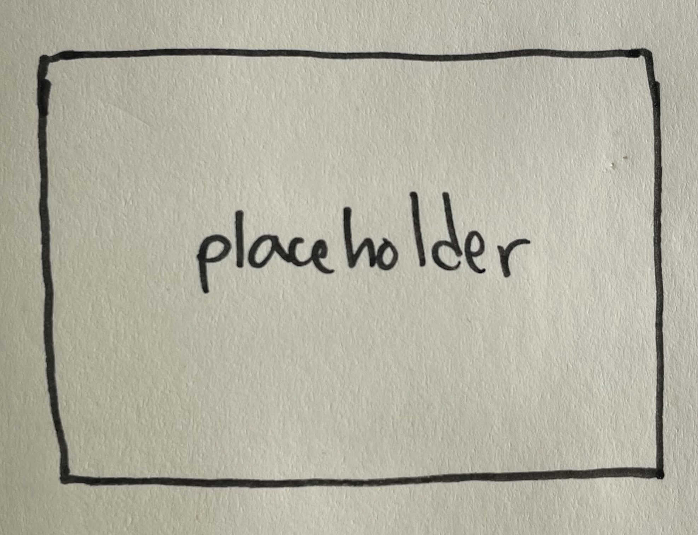

Redesigning InquirED's Curriculum Portal
New navigation and WCAG accessible mobilefirst responsive designs
Inquired context...

UX Audit, User Research, and Desing Systems integration for the Store Shipping Portal
Problem: A large soft goods company is looking to improve the shipment tracking experience for its store employees.
Role: Product Designer
Impact: Redesigned Store Shipping Portal and instituted a design system based on lululemon brand styling and insights gleaned from direct user feedback.
The Store Shipping Portal is a web application where US store employees log in to track and manage inbound inventory supply and plan for stocking. Built by OBL engineers,the portal functions well already. So how do we know what to improve?
There are two quick ways to surface opportunities for improvement, especially in a brand new mvp:
1. Ask the users!
Who knows what to improve about an existing system than those who interact with it every day? One of the best ways to find areas for improvement is to ask questions and observe store employees with the tool as they use it in context.
2. Apply usability guidelines and best practices to our system
Another easy way to improve the Store Portal is to examine it through a lens of usability to identify divergence from UX best practices. Does the store have clear navigation and information hierarchy? Are buttons labelled clearly? Are fonts and colors consistent? If not, these are clear and easy areas to make vast improvements to the UX.
Here's what our current Store Portal looks like:
It's a pretty powerful piece of software, but if you look closer you might start to wonder, "Does the header need to take up so much room? What do the different icons mean? Are they buttons? Why are we using so many different fonts? Where am I now? How do I get back to where I was before? How do the different pages relate to one another?
After an extended usability review, I identified 3 key priorities:
In my designs for Store Portal 2.1, I've added a navigation sidebar and breadcrumbs. The service title now lives in the application bar, which makes room for informative page titles that orient users. Clearer button labels make actions clear at a glance. And behind the consistent, professional interface is a design system that draws from lulu's consumer branding patterns.
I mocked up some initial changes and organized a contextual inquiry session with an in-store team to understand how well the current Store Portal was serving it's core users. I spent an hour with a store Educator™ who has experience with the Store Portal and asked her to wlak me through the shipment receiving process.
I asked questions like:
Here's what we found:
First, we highlight the wrong number in our calendar. The three defining factors in inventory staffing are total units to be processed, number of Educators, and the skill and experience of each Educator. Logistics leads look at total arriving units to understand staffing requirements, with guidance that suggests that a typical educator can process 80 units per hour. Total arriving cartons, highlighted in luluroute2.0, is not a good predictor of workload because a single carton can have anywhere from 1 to 60+ units inside.
Second, we can improve support for tracking down missing items. Sometimes, a package or item is missing after inventory. The Point On Logistics takes the carton ID from Power BI, and uses it to find the Tracking Number. Once you have the carton ID from PowerBI, it takes 7 steps to track down a missing package. Adding a "Carton Lookup" feature with clickable tracking numbers could reduce that process to 2 steps.
New navigation and WCAG accessible mobilefirst responsive designs
Inquired context...
In-context Academic Advising
Spring 2025 - How might we guide lost students at a critical junctures in their academic journeys using agentic adivsors trained on historic student data and advising materials?